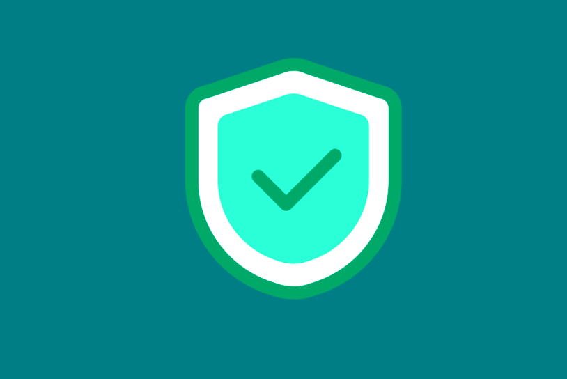

Protege tu Cuenta de Yape
En Yape, nos importa la seguridad de tu cuenta. A continuación te mostramos algunos consejos y pasos a seguir para proteger tu cuenta en caso de robo o pérdida de tu dispositivo.

Usa Contraseñas Fuertes
Asegúrate de utilizar contraseñas únicas y seguras. Combina letras, números y caracteres especiales para aumentar la seguridad.

Habilita la Verificación en Dos Pasos
Activa la autenticación de dos factores (2FA) para una capa adicional de seguridad al acceder a tu cuenta Yape.

Mantén Tu Dispositivo Seguro
Instala software de seguridad y mantén actualizado tu dispositivo móvil para proteger tu información personal y tu cuenta de Yape.
¿Qué hacer si pierdes tu celular o sospechas de un robo?
Si tu celular ha sido robado o lo has perdido, es crucial que tomes acción de inmediato para proteger tu cuenta. Sigue estos pasos:
- Bloquea tu cuenta: Inicia sesión y bloquea tu cuenta a través de la página de Yape.
- Contacta con el soporte: Si no puedes acceder a tu cuenta, contacta con el soporte de Yape para recibir asistencia adicional.
- Reporta el robo: Informa a las autoridades locales sobre el robo de tu dispositivo.
Consejos adicionales
- 🔒 Evita redes Wi-Fi públicas: No accedas a tu cuenta de Yape usando redes Wi-Fi no seguras, ya que pueden ser vulnerables a ataques.
- 📊 Revisa tus movimientos: Realiza un seguimiento de las transacciones realizadas en tu cuenta Yape para detectar cualquier actividad sospechosa.
- 🔔 Configura alertas: Activa las alertas para que te notifiquen cuando haya movimientos o intentos de acceso inusuales en tu cuenta.